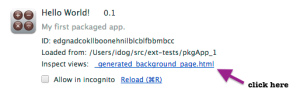

Today I’ve spoke on GDL-IL (=Google Developer Live Israel) with Ron Reiter on his work at Any.Do and how he leverage backbone.js to create this useful chrome extension. The main points we covered during our talk:
- Chrome Extensions- How you start developing them and why you will want to do it.
- Extensions are small software programs that can modify and enhance Chrome. The best part is that you write them using web technologies such as HTML5, JavaScript, and CSS. Here is the code for the example extension I’ve wrote as ‘short cuts’ to Chrome internal pages.
- Ron gave us a short description on backbone.js and what are the main components in this MV* framework. You can learn more at: http://documentcloud.github.com/backbone/
- We talked about Any.do extension and Ron gave a nice overview of the code he used for the sync layer.
- Few tips for extensions developers:
- How to inspect an extension: open the popup and right click inside of it. It will give you the option to open chrome devtools (with the ‘inspect element menu item). In cases, where you don’t have a popup – you can always use chrome://extensions and click on ‘inspect background page’.
- If you have some logic you wish to test without the extension (or not inside it) you can always run QUnit (or any other unit test framework) on a page that will be a proxy to your popup’s index.html file.
Enjoy and feel free to join us every week on WED 14:00 Israel time at https://developers.google.com/live/
Rate this:
Like this:
Be the first to like this.


{kind=link}
{kind=link}
Ron Reiter rocks!